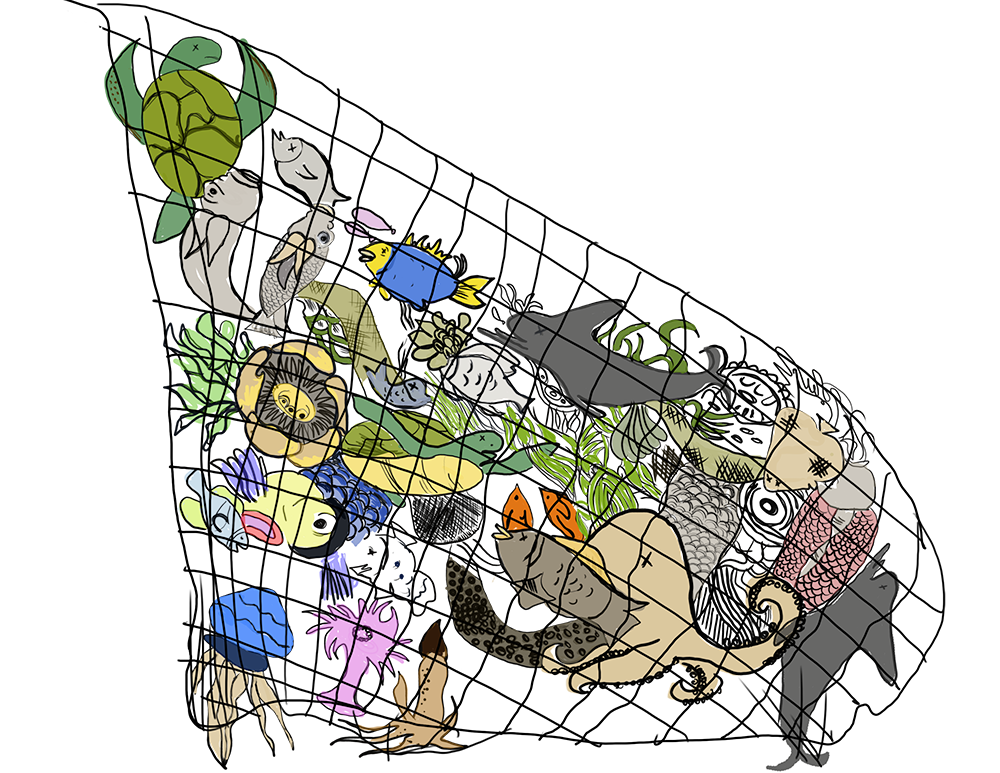
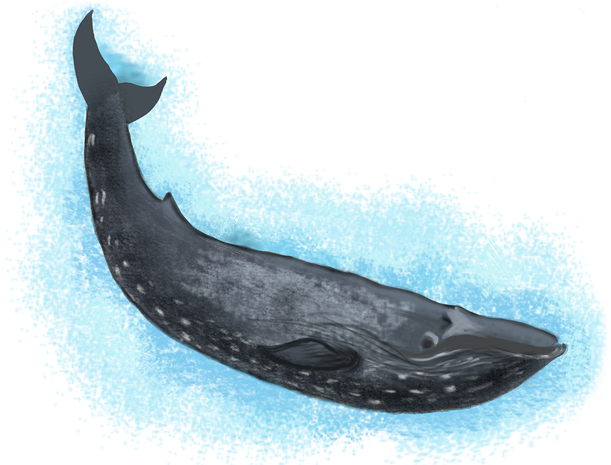
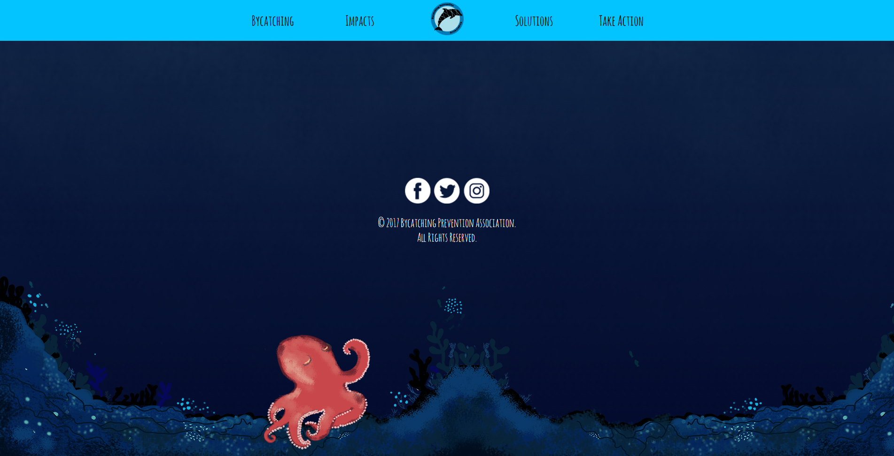

This project required us to create a website.
I chose to make the site a single page website about bycatching. Bycatching is the act of accidentally catching unintended fish and animals when trying to fish. This results in hundreds of thousands of animals such as dolphins and sea turtles dying each year due to fishing. This is a big issue that is not very well known to the public, so I wanted to raise awareness.
To present all the information, a single page website seemed like the best format for this website. As a user scrolls through the page, fish swim by from one side of the screen to another.
Although I used Adobe Dreamweaver for this project, getting the fish to move was the difficult part. After searching w3Schools and other websites online, I found a simple script that would do this for me when I scrolled.
This was the first large project I did that involved digital painting. Although I had done it before, I did not create as much detail in the past on previous projects. By using Photoshop and my Surface Book, I was able to sketch lots of details on all of the animals.
Overall, this project was difficult because of all the web designing involved. But this project is what got me really interested in digital illustration.